フェイスセットを別のオブジェクトに切り出す
「フェイスセット抽出」は、表示中でいちばん面の数が多いフェイスセットを、厚みのある新しいオブジェクトにします。別のフェイスセットを切り出す時は、ほかを隠してから押します。

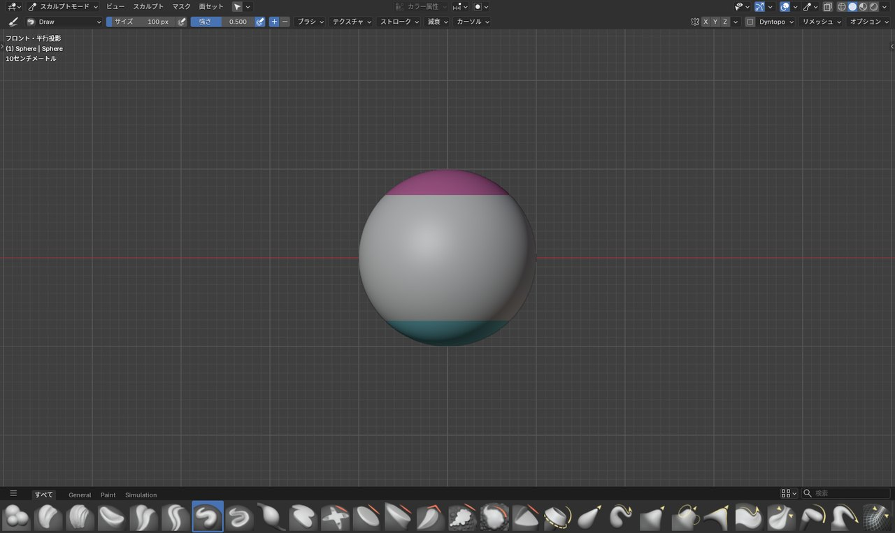

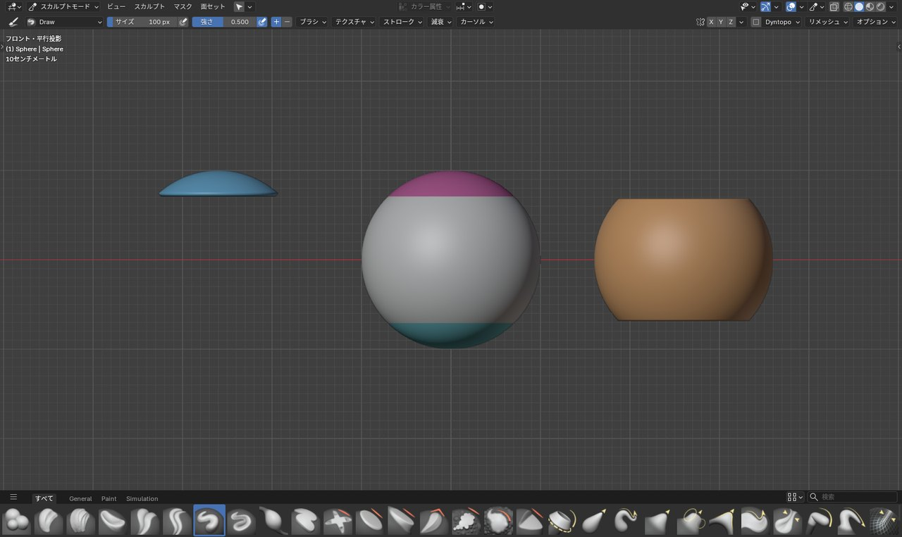
SmartTools アドオン解説書
版 1.0.0 ／ 2026年11月18日 ／ Blender 5.1.2 用
SmartSculpt Suite は、スカルプトの準備、ブラシの切り替え、リメッシュ（面を作り直すこと）、マスク、フェイスセット、メッシュの点検と修正、スナップショット（途中の形の保存）を、3D ビューのサイドバーにまとめたアドオンです。メッシュ編集モードのままブラシのように形を動かせる「編集モード専用スカルプト」も入っています。見出しはどれも折りたたみ式です。必要な見出しだけを開いて使います。各見出しの「？」を押すと、その見出しの説明が出ます。
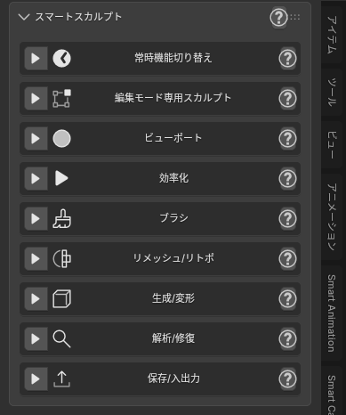
3DビューポートでNキーを押し、「Smart Sculpt」タブの「スマートスカルプト」を開きます。「編集モード専用スカルプト」を試すときは、対象メッシュを編集モードにします。
入口全体の図では、通常は開いている「編集モード専用スカルプト」を折りたたんでいます。
ボクセルリメッシュで変わった網目を、事前に保存したスナップショットから復元。形だけでは分からない差を、ワイヤーで確認できます。
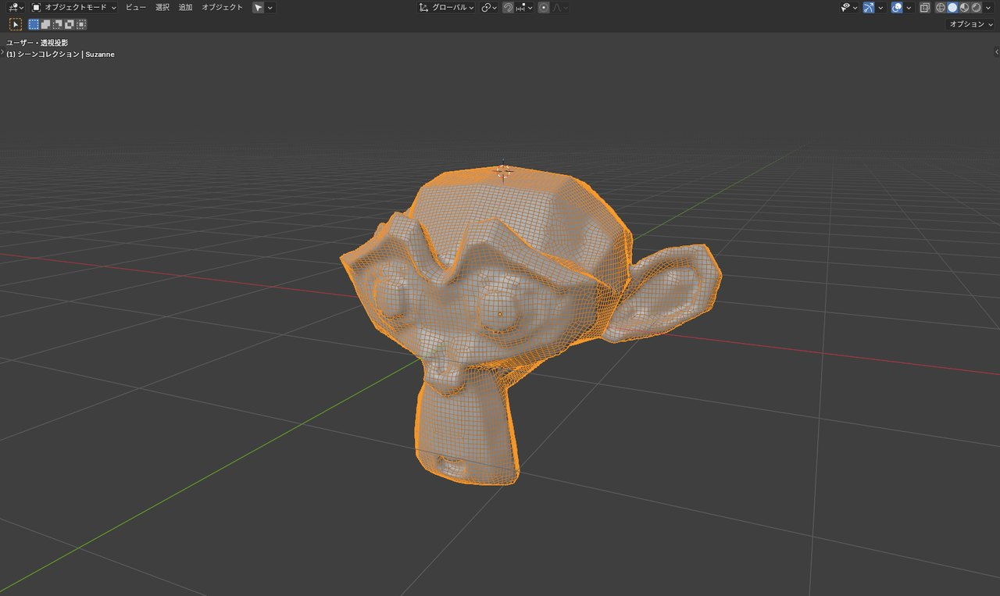
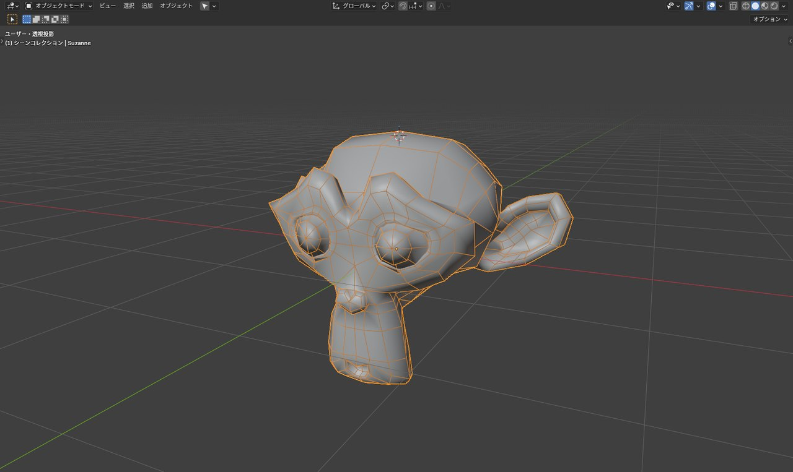
試す前に リメッシュ前にスナップショットを保存する。
この作例の手順を見る作例を画像で保存 (PNG)導入・トラブルのヘルプ
「フェイスセット抽出」は、表示中でいちばん面の数が多いフェイスセットを、厚みのある新しいオブジェクトにします。別のフェイスセットを切り出す時は、ほかを隠してから押します。


「レールカッター作成」は、細長いカッターを作って、アクティブなメッシュに溝を彫ります。
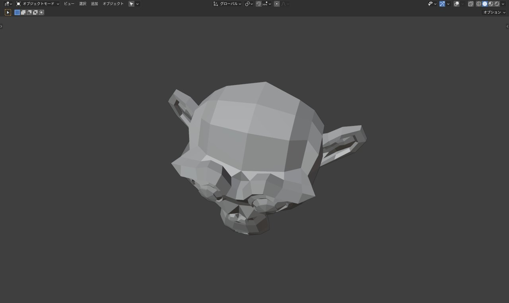
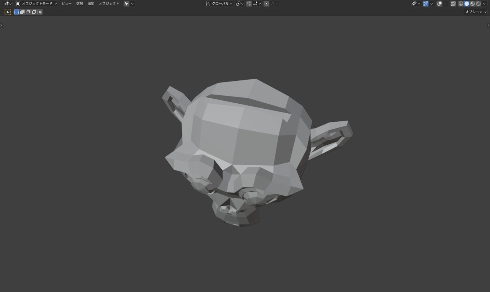
スカルプト（粘土をこねるように形を作る作業）の道具をサイドバーの「Smart Sculpt」タブにまとめ、メッシュ編集モードのままでもブラシやフィルターで形を整えられるアドオンです。
このアドオンを使うと、画面は次のように変わります。くわしい操作は 5 章の各機能の「実例」で説明します。
実例ざらざらの表面を、編集モードのままなめらかにする（細かくしたスザンヌで試した様子）
「メッシュフィルター」の「スムーズ」で、選んだ頂点にスムーズをくり返しかけて、でこぼこをならします。スカルプトモードに入らずに使えます。
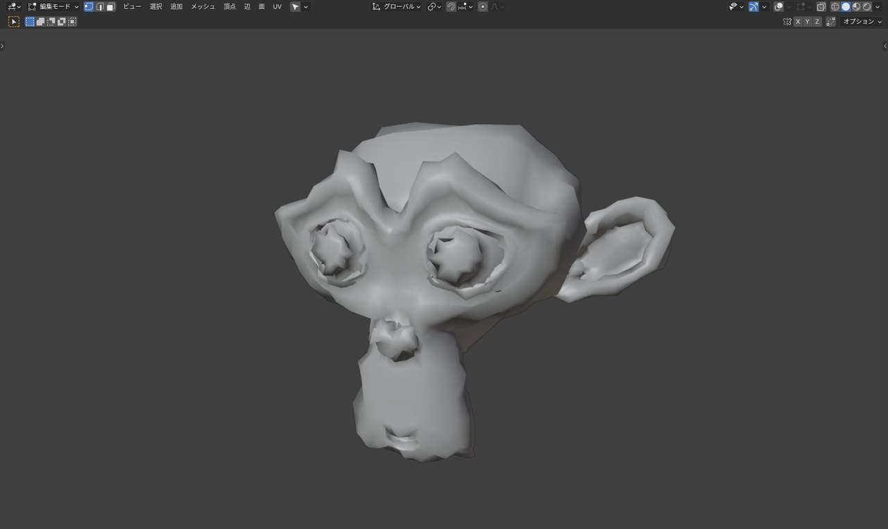

見どころ：表面のざらざらが消えて、つるっとした形になります。ならすぶん、耳などの形は少しだけ小さくなります。スカルプトモードに入らず、編集モードのまま行えます。
このアドオンならではの機能を、図に番号を付けて説明します。図の中の番号と、図の下の一覧の番号が対応しています。図を押すと大きく表示されます。設定の一つ一つは 5 章の各見出しで説明します。
ふつう、形をならしたり盛ったりするには、スカルプトモードに切り替えます。「編集モード専用スカルプト」は、メッシュ編集モードのまま、選んだ頂点（何も選んでいなければ見えている頂点）に、スムーズなどのフィルター、3D ビューをなぞるブラシ、マスク、フェイスセット、頂点カラー、対称化を使えます。モードを行き来せずに、頂点の選択と形の調整を続けられます。下の 2 枚は、編集モードで全部の頂点を選び、「反復回数」10・「強さ」0.8 で「スムーズ」を押した前と後です。
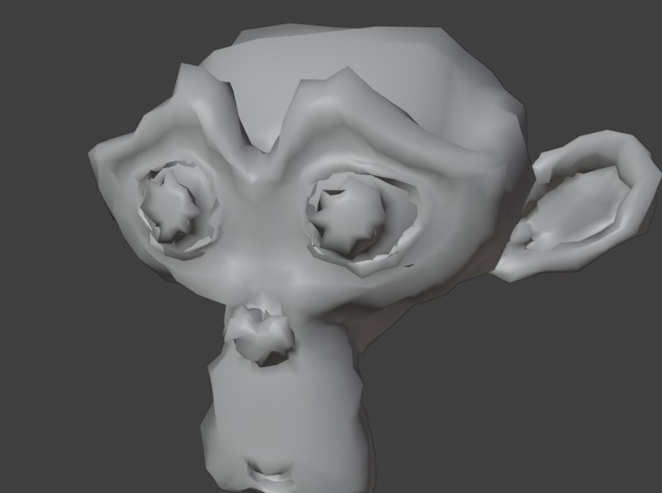

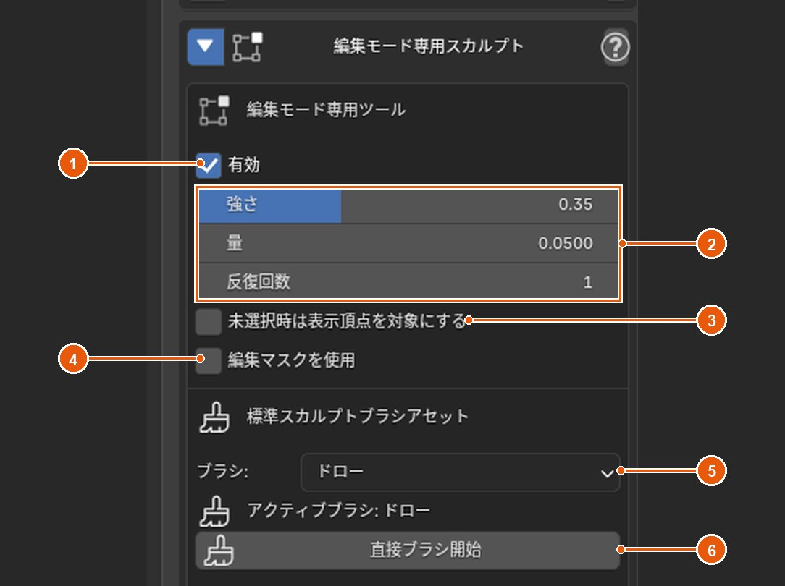
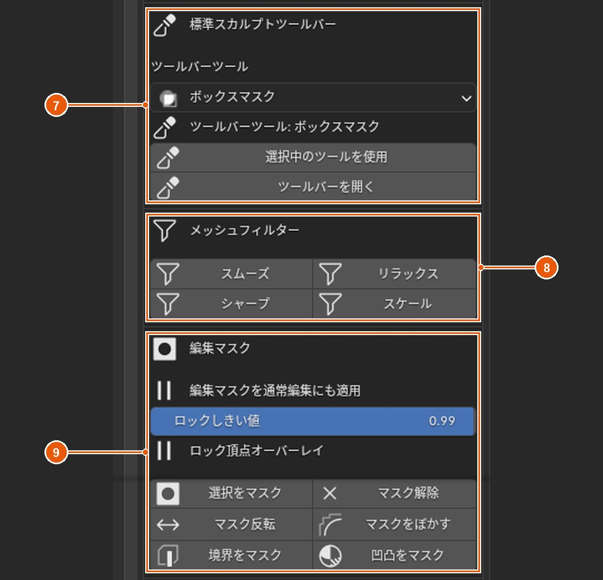
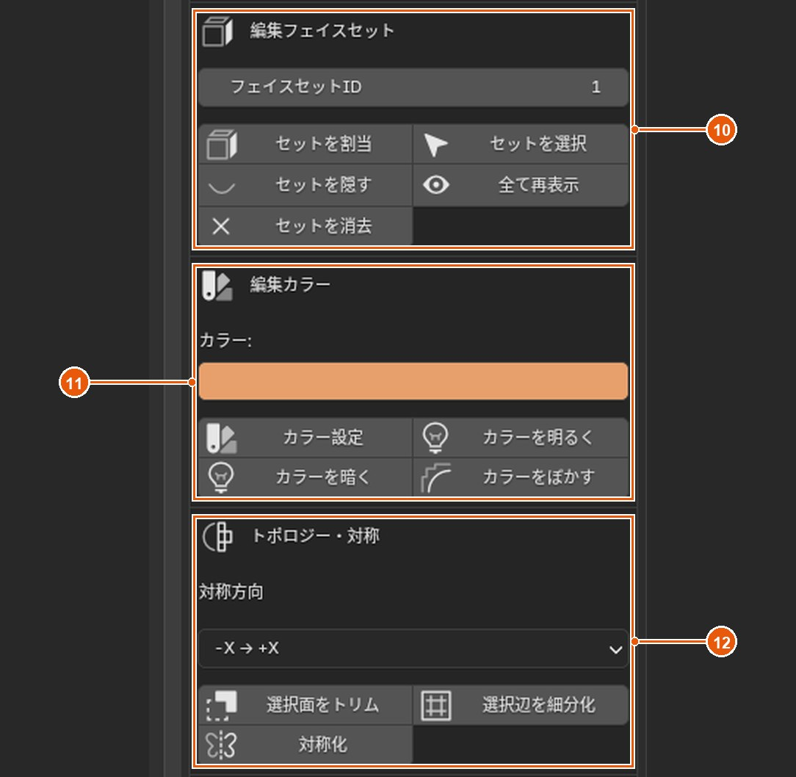
くわしい設定：5-2. 編集モード専用スカルプト、5-3. 標準スカルプトブラシアセット（編集モード専用スカルプトの中）、5-5. メッシュフィルター（編集モード専用スカルプトの中）、5-10. キーマップ登録ID・標準スカルプト互換性（編集モード専用スカルプトの中）
リメッシュ・ブーリアン・スライスなどは、元の面を作り直す操作で、あとから元の網目には戻せません。「スナップショット保存」で今の形を残しておけば、大きな変更の後でも「スナップショット復元」で戻せます。保存を忘れても、「回復バックアップ」（最初からオン）が、リメッシュ・ブーリアン・修正・UV の上書き・スライスなどの前に、オブジェクトごとに控えを 1 つ自動で作ります。下の 3 枚は、保存 → ボクセルリメッシュ → 復元の順で、網目の変わり方を比べた物です。
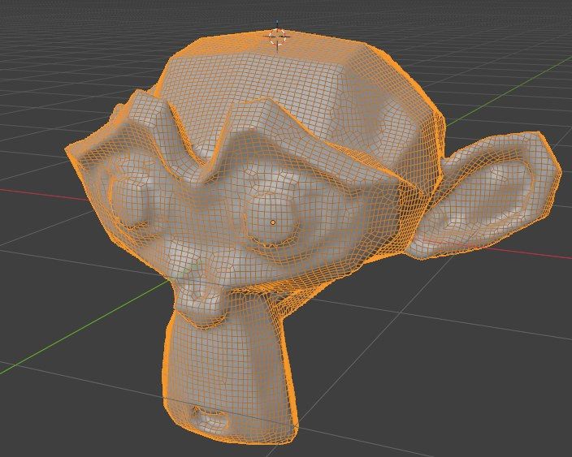
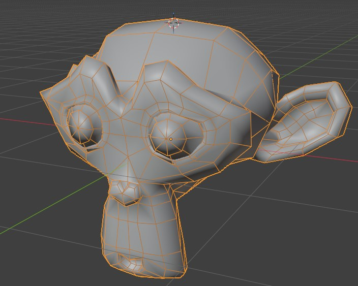
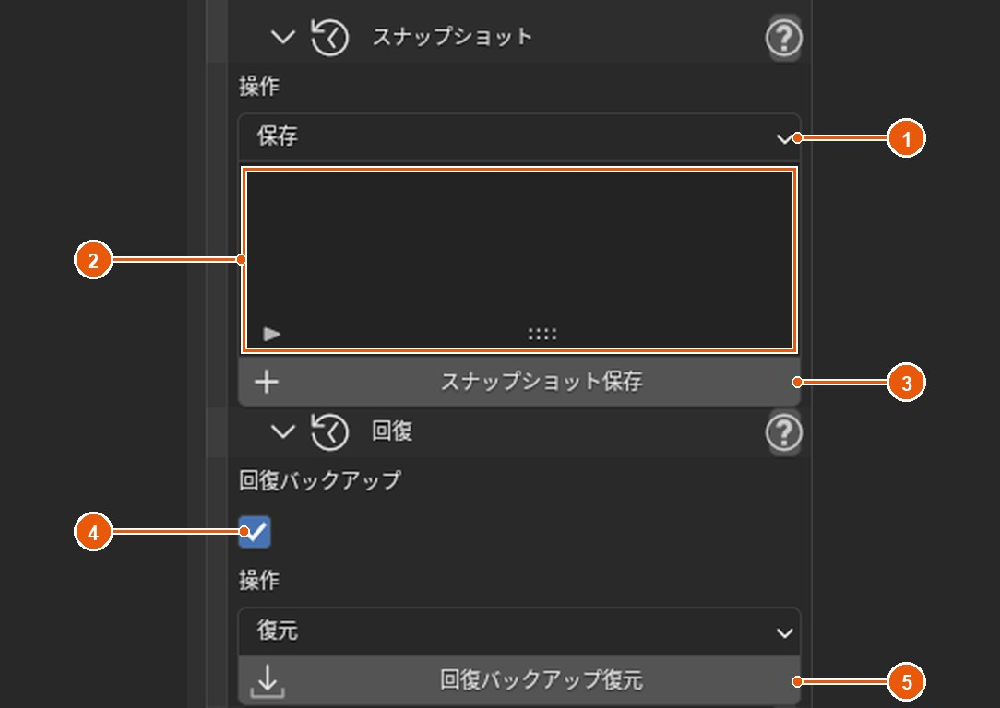
くわしい設定：5-18. 保存/入出力
重い処理や書き出しの前に、メッシュの問題をまとめて調べて直します。「解析」で問題を洗い出し、「修正」でチェックした直しをまとめて行います。「ライブメッシュ準備度」には、100 点満点の点数と、そのメッシュに勧める処理が出ます。下の 2 枚は、右半分の面が裏返ったスザンヌに「修正」（最初の設定の「法線再計算」）をかけた前と後です。

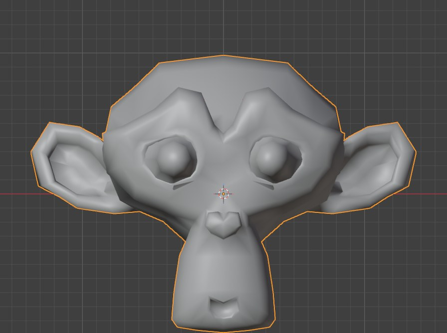
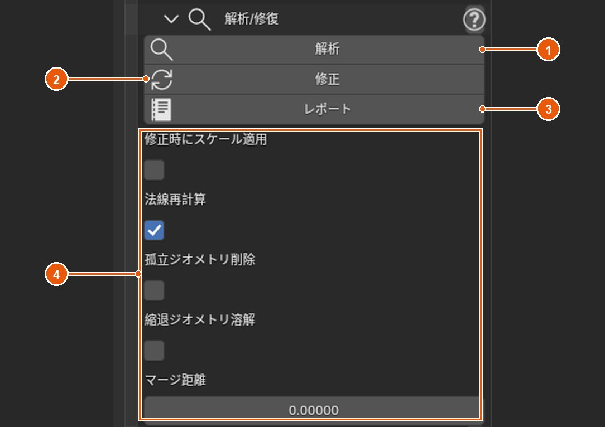
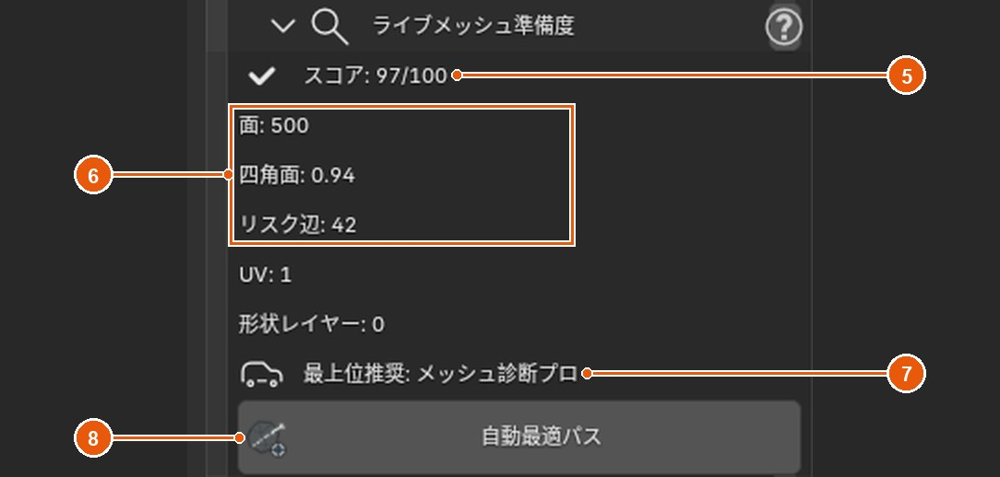
アドオンの入れ方・画面を日本語にする方法・N パネルと「？」ヘルプの共通の使い方は、「SmartTools 全体仕様書」にまとめています。先にそちらの 2〜5 章を読んでください。
| 入れる ZIP | SmartSculptSuite_1.0.0.zip |
|---|---|
| Blender の画面での名前 | Smart Sculpt |
| 動く Blender | 5.1.2 |
3D ビューのサイドバー（N パネル）の「Smart Sculpt」タブに、「スマートスカルプト」パネルが出ます。パネルは最初は閉じています。インストール・日本語化・N パネルの開き方・「？」ヘルプの共通の使い方は、全体仕様書の共通の章を見てください。
| 出る画面 | 3D ビューポート |
|---|---|
| タブ | Smart Sculpt |
| モード | 主にスカルプトモードとオブジェクトモードで使います。「編集モード専用スカルプト」はメッシュ編集モードで使います。 |
画面の上から順に、見出しごとに説明します。見出しの右の「？」を押すと、同じ内容の説明が画面にも出ます。青い枠の「実例」は、スザンヌなどの簡単なモデルで実際に操作し、3D ビューでの変化を前と後で並べたものです。
パネルのいちばん上にある見出しです（時計の印が付いています）。ずっと動かしておく必要がある機能だけを、ここでオン・オフします。ふつうの道具は、ボタンを押した時だけ動きます。
場所「スマートスカルプト」パネルの最上部
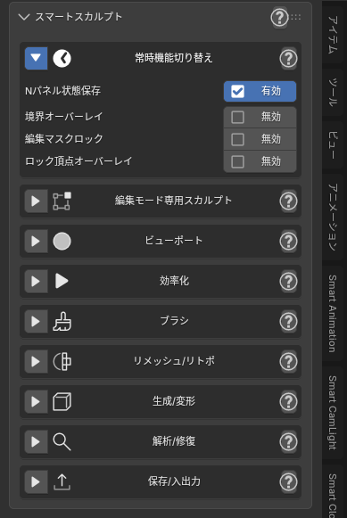
| 表示 | 働き |
|---|---|
| Nパネル状態保存 | 最初からオンです。オンの間は、N パネルの設定を変えるたびにすぐ保存し、Blender を起動した時やシーンを切り替えた時に元に戻します。オフにすると、今のシーンを閉じる時か、プリファレンスを保存する時だけ保存します。 |
| 境界オーバーレイ | ナビゲーション（視点の移動）の境界の目安を、画面にずっと表示します。必要な時だけオンにします。 |
| 編集マスクロック | 「編集モード専用スカルプト」の編集マスクを使う間、マスクした頂点を動かないように見張り続けます。オフにすると見張りをすぐ止めます。 |
| ロック頂点オーバーレイ | 動かないようにした頂点を、3D ビューに色の付いた点で表示し続けます。オフにすると表示をすぐ止めます。 |
メッシュ編集モードのまま、スカルプトに近い操作をするための見出しです。モードを切り替えずに、選んだ頂点や見えている頂点を動かします。この見出しだけは最初から開いています。中は、ここから下に書く枠（「編集モード専用ツール」「標準スカルプトブラシアセット」など）に分かれています。最初の枠が「編集モード専用ツール」です。
場所「スマートスカルプト」パネル →「編集モード専用スカルプト」→「編集モード専用ツール」
| 表示 | 働き |
|---|---|
| メッシュ編集モードへ | メッシュ編集モードでない時に出るボタンです。押すと、選んでいるメッシュを編集モードにします。 |
| 有効 | この見出しの道具を使えるようにします。オフの間は、下の枠のボタンが押せません。 |
| 強さ／量／反復回数 | フィルターなどの効き方の強さ、動かす量、くり返す回数です。 |
| 未選択時は表示頂点を対象にする | 何も選んでいない時に、見えている頂点全部を対象にします。 |
| 編集マスクを使用 | マスクした頂点を動かさないようにします。 |
メッシュ編集モードで、3D ビューの上を直接なぞって形を動かすブラシです。スカルプトモードには入りません。
場所「編集モード専用スカルプト」の中の「標準スカルプトブラシアセット」の枠
| 表示 | 働き |
|---|---|
| ブラシ | 使うブラシを選びます。選んだブラシは「アクティブブラシ」に表示されます。 |
| 直接ブラシ開始 | 押すと、3D ビューの上をなぞってブラシを使えるようになります。 |
| ブラシ設定 | 「半径」「ブラシ強さ」「ブラシ量」「方向」「間隔」「フォールオフ」（中心から外へ向かう効き方の弱まり方）「硬さ」「法線半径」「自動スムーズ」「蓄積」「平面オフセット」「前面のみ」「ストローク安定化」「入力サンプル」「筆圧半径」「筆圧強さ」「強さキー操作」「強さ変更量」などを決める枠です。「蓄積」がオンだと、同じストロークの中で効き目が重なっていきます。「入力サンプル」を増やすと、速くなぞっても線が途切れにくくなります（そのぶん重くなります）。「強さキー操作」がオンだと、ブラシを使う間だけ、キーで強さを「強さ変更量」ずつ上げ下げできます。 |
| ブラシアセットポップアップを開く | ブラシの一覧を小さな窓で開き、アイコンを押して選びます。 |
| 移動オフセット／ポーズ軸／ポーズ角度 | 動かすブラシの移動量と、ポーズ系のブラシで曲げる軸と角度です。 |
範囲を囲んでマスクやフェイスセットを付けるツールなどを、メッシュ編集モードで使うための枠です。
場所「編集モード専用スカルプト」の中の「標準スカルプトツールバー」の枠
| 表示 | 働き |
|---|---|
| ツールバーツール | 使うツールを選びます。 |
| 選択中のツールを使用 | 選んだツールを始めます。範囲を決めるツールは、左ボタンのドラッグかクリックで範囲を決め、Esc か右ボタンでやめます。範囲を決めないツールは、押すとすぐ実行します。 |
| ツールバーを開く | ツールの一覧を小さな窓で開きます。アイコンを押すと、そのツールを選んですぐ使い始めます。 |
対象の頂点全体を、まとめてなめらかにしたり、整えたりします。対象は選んだ頂点です（「未選択時は表示頂点を対象にする」がオンなら、何も選んでいない時は見えている頂点全部）。
場所「編集モード専用スカルプト」の中の「メッシュフィルター」の枠
| 表示 | 働き |
|---|---|
| スムーズ | スムーズ（表面をならす処理）をくり返して、表面をなめらかにします。 |
| リラックス | 形の厚みをなるべく保ったまま、頂点の並びを整えます。 |
| シャープ | 凹凸をはっきりさせます。強くしすぎると、とげが出ることがあります。 |
| スケール | 選んだ部分を、その中心から大きく、または小さくします。 |
実例ざらざらの表面を、編集モードのままなめらかにする（細かくしたスザンヌで試した様子）
「メッシュフィルター」の「スムーズ」で、選んだ頂点にスムーズをくり返しかけて、でこぼこをならします。スカルプトモードに入らずに使えます。
見どころ：表面のざらざらが消えて、つるっとした形になります。ならすぶん、耳などの形は少しだけ小さくなります。スカルプトモードに入らず、編集モードのまま行えます。
マスク（動かさない印）を、メッシュ編集モードで付けたり外したりします。
場所「編集モード専用スカルプト」の中の「編集マスク」の枠
| 表示 | 働き |
|---|---|
| 編集マスクを通常編集にも適用 | 「常時機能切り替え」の「編集マスクロック」がオンかどうかを、印で表示します。オンで「編集マスクを使用」もオンの時は、移動・回転・拡大縮小などのふつうの編集でも、マスクした頂点が元の位置に戻ります。 |
| ロックしきい値 | マスクの値がこの値以上の頂点を「動かさない頂点」とみなします。最初は 0.99 で、完全に近くマスクした頂点だけが対象です。 |
| ロック頂点オーバーレイ | 「常時機能切り替え」の「ロック頂点オーバーレイ」がオンかどうかを、印で表示します。 |
| ロック頂点カラー／ロック頂点サイズ | 「ロック頂点オーバーレイ」がオンの時に出ます。印の色と大きさです。 |
| 選択をマスク | 選んでいる頂点にマスクを付けます。 |
| マスク解除／マスク反転 | マスクを外します。マスクの付いた所と付いていない所を入れ替えます。 |
| マスクをぼかす | マスクの境目をなめらかにします。 |
| 境界をマスク／凹凸をマスク | メッシュの縁や、凹凸のある所にマスクを付けます。 |
フェイスセット（面のグループ。色分けで見分けます）を、メッシュ編集モードで扱います。
場所「編集モード専用スカルプト」の中の「編集フェイスセット」の枠
| 表示 | 働き |
|---|---|
| フェイスセットID | 操作するフェイスセットの番号です。 |
| セットを割当 | 選んでいる面を、その番号のフェイスセットにします。 |
| セットを選択 | その番号のフェイスセットの面を選びます。 |
| セットを隠す／全て再表示 | フェイスセットを隠します。隠した物を全部また見せます。 |
| セットを消去 | フェイスセットを外します。 |
実例頭の上の面をグループにして、まとめて隠す（セットを割当・セットを隠す）（スザンヌで試した様子）
「セットを割当」で選んだ面をフェイスセットにし、「セットを隠す」でそのグループだけを隠します。かぶさった部分の奥を作業する時に使えます。
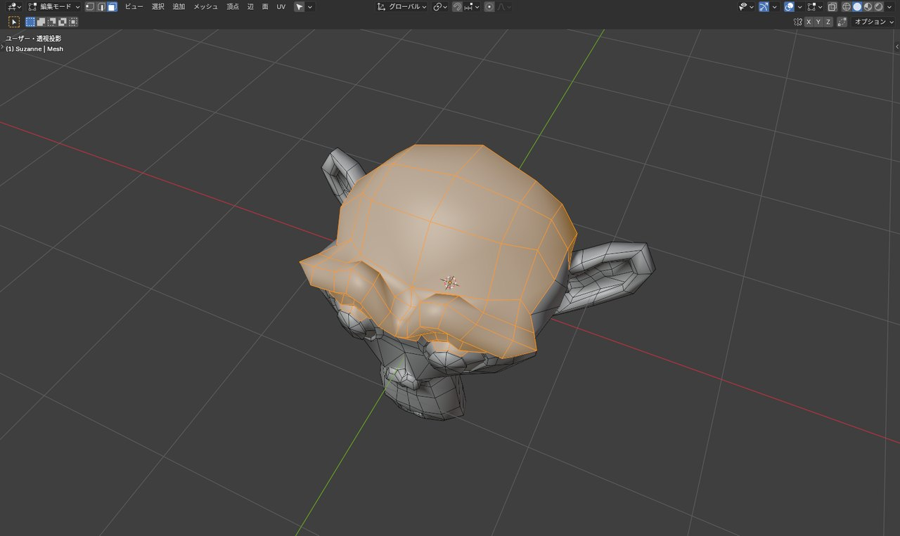
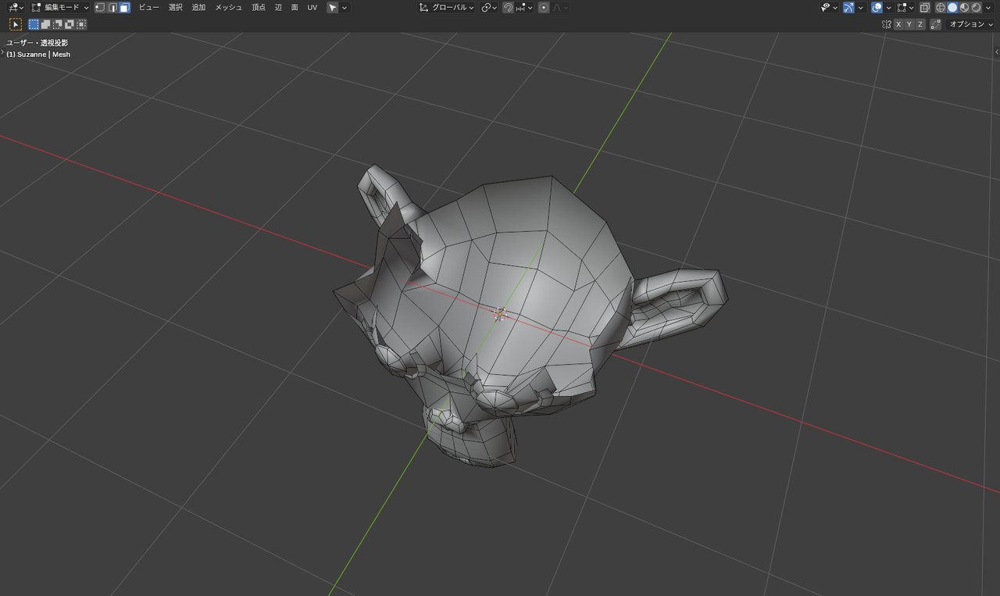
見どころ：グループにした頭の上の面だけが消え、中が見えます。選び直さなくても、番号で同じ面をまとめて扱えます。
頂点カラー（頂点ごとに付ける色）を、メッシュ編集モードで塗ります。
場所「編集モード専用スカルプト」の中の「編集カラー」の枠
| 表示 | 働き |
|---|---|
| カラー | 塗る色を選びます。 |
| カラー設定 | 選んだ部分にその色を付けます。 |
| カラーを明るく／カラーを暗く | 今の色を明るく、または暗くします。 |
| カラーをぼかす | 色の境目をなめらかにします。 |
実例選んだ面に、編集モードのまま色を塗る（スザンヌで試した様子）
「カラー設定」で、選んでいる面に頂点カラーを塗ります。部位の色分けや目印に使えます。
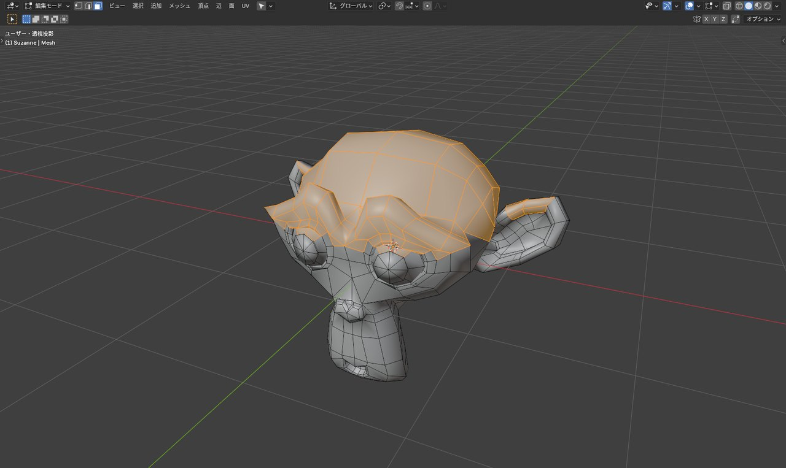
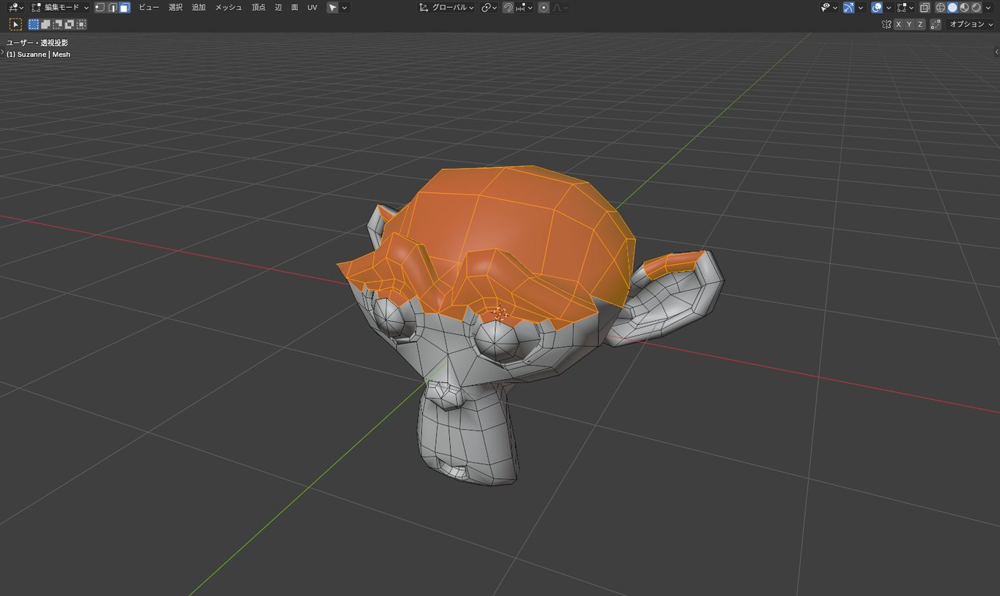
見どころ：選んだ頭の上（耳の上の縁も含む）が赤く塗られます（選択中のため、選択の色と重なって見えます）。モードを切り替えずに、編集モードのまま塗れます。
面を切る、細かくする、左右をそろえる操作です。
場所「編集モード専用スカルプト」の中の「トポロジー・対称」の枠
| 表示 | 働き |
|---|---|
| 対称方向 | どちら側をもう片側へ写すかを選びます。 |
| 選択面をトリム | 選んだ面を切り取ります。 |
| 選択辺を細分化 | 選んだ辺を分けて、面を細かくします。 |
| 対称化 | 片側の形を、もう片側へ写して左右をそろえます。 |
実例片側だけ直した耳を、もう片側にも写す（対称化）（スザンヌで試した様子）
「対称化」で、片側の形をもう片側へ写して、左右をそろえます。
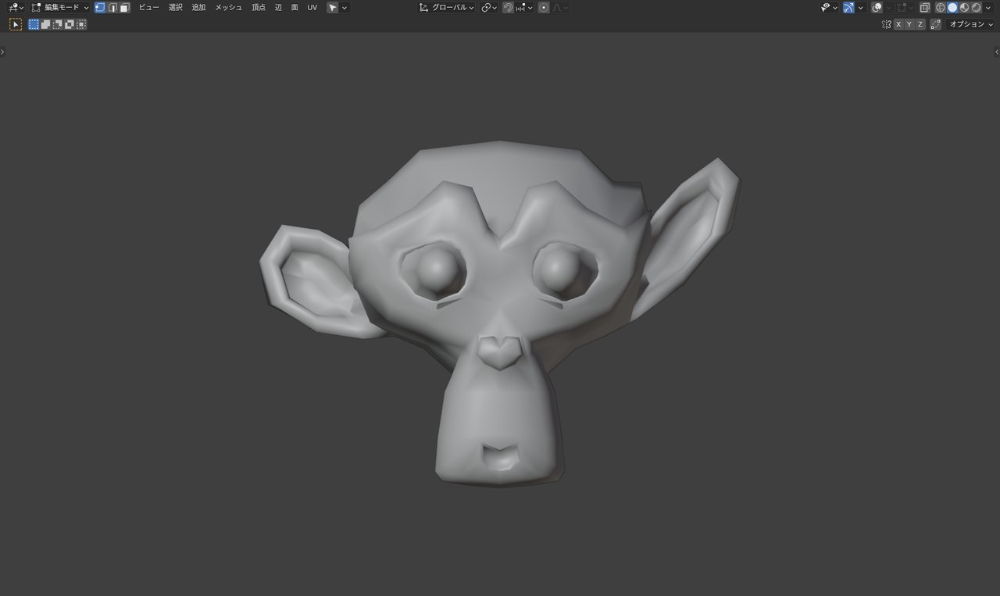
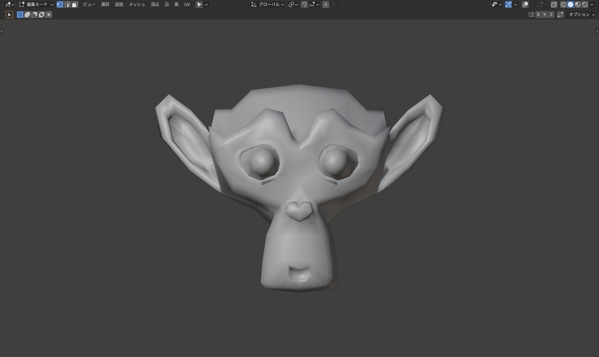
見どころ：片方だけ持ち上げた耳が、反対側にも同じように写り、左右がそろいます。
ショートカットキーに登録するための名前（オペレーターID）をコピーする枠と、Blender 標準のスカルプト機能が編集モードで使えるかを調べる枠です。
場所「編集モード専用スカルプト」の中の「キーマップ登録ID」「標準スカルプト互換性」の枠（いちばん下）
| 表示 | 働き |
|---|---|
| 直接ブラシ開始演算子ID | 直接ブラシを始める操作です。枠に ID の文字は出ません。右のボタンを押すと ID をコピーします。 |
| ブラシポップアップ演算子ID／ツールバーポップアップ演算子ID | ブラシの一覧、ツールの一覧を開く操作です。右のボタンを押すと ID をコピーします。 |
| 標準スカルプト診断 | Blender 標準のスカルプト操作が、今の編集モードで使えるかを調べて報告します。モードは切り替えません。 |
3D ビューの見え方を切り替えて、形を見やすくします。
場所「スマートスカルプト」パネル →「ビューポート」→「ビューポート視認性」「ビューポートポップアップ」
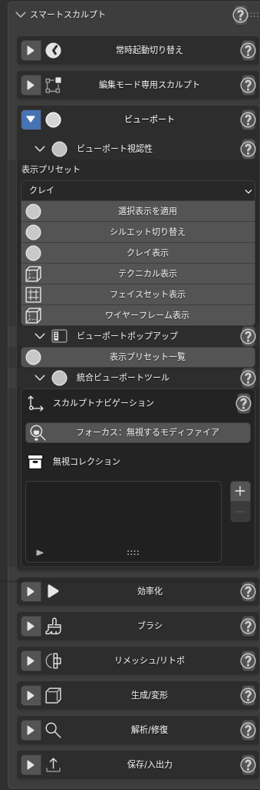
| 表示 | 働き |
|---|---|
| 表示プリセット | 見え方の組み合わせを選びます。 |
| 選択表示を適用 | 「表示プリセット」で選んだ見え方にします。 |
| シルエット切り替え | 形を影絵のように平らな色で表示して、輪郭を確かめます。もう一度押すと戻ります。 |
| クレイ表示／テクニカル表示／フェイスセット表示／ワイヤーフレーム表示 | それぞれの見え方に、ボタン 1 つで切り替えます。 |
| 表示プリセット一覧 | 「ビューポートポップアップ」の中にあります。見え方を小さな一覧から選びます。 |
| 統合ビューポートツール | 「ビューポート」の中のいちばん下にある枠です。スカルプトナビゲーションのフォーカスの除外を置いています。「フォーカス：無視するモディファイア」を押すと、フォーカスの時に無視するモディファイアの設定を開きます。「無視コレクション」の「＋」で入れたコレクションの物は、フォーカスの対象から外れます。最初は閉じています。 |
実例影絵の表示で輪郭を確かめる（シルエット切り替え）（スザンヌで試した様子）
「シルエット切り替え」で、形を平らな色の影絵のように表示し、輪郭だけを確かめます。
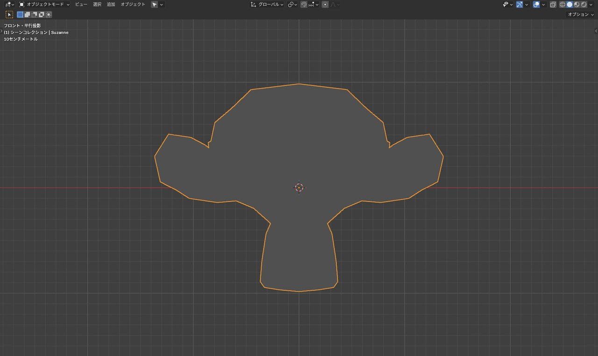
見どころ：陰影が消えて形が一色の影になり、耳や頭の輪郭のバランスが見やすくなります。
作業の準備、複数のパーツの切り替え、よく使うメニューの呼び出し、スカルプトセッションの管理をまとめた見出しです。
場所「スマートスカルプト」パネル →「効率化」
| 表示 | 働き |
|---|---|
| アクティブ対象 | 選んでいるメッシュの名前、モード、頂点・辺・面の数を表示します。 |
| ワークフロー実行 | 「操作」で準備やパーツ切り替えなどを選び、その下に出るボタンで実行します。最初は「ワークスペース準備」が選ばれていて、ボタンは「コア設定を実行」です。「コア設定を実行」は、スカルプトしやすい表示に整えます。ほかに「複数オブジェクト準備」「前パーツ」「次パーツ」などがあります。「前パーツ」「次パーツ」は、選んでいる複数のメッシュの中で、作業する物を順に切り替えます。 |
| 自動でスカルプトへ | 最初からオンです。スカルプト用の物を作ったあと、自動でスカルプトモードに入ります。 |
| クイックパイ | 「直接アクセス」の中にあります。描画・スムーズ・つかみ・ポーズのブラシ切り替え、ダイナミックトポロジー、ボクセルリメッシュ、マスク抽出、スナップショット保存を、丸いメニュー（パイメニュー）から実行します。 |
| ワークフロープロファイル一覧 | 「直接アクセス」の中にあります。作業に合わせた設定の組み合わせを、小さな一覧から選んで当てます。 |
| スマートワークフロー | 「操作」で選んだまとめ処理を「選択スマートアクションを実行」で実行します。「ライブ指標」をオフにすると、「解析/修復」の「ライブメッシュ準備度」が隠れます。「アイコンサイズ」は、「解析/修復」の「選択スマートアクションを実行」「自動最適パス」のボタンの高さです。「スマートアクションボタン」をオフにすると、各見出しの中のスマートアクションのボタンの枠（「ワークフロースマート実行」「ブラシスマート実行」など）をまとめて隠します。 |
| スカルプトセッション管理 | 選んだいくつかのメッシュを 1 つにまとめた、作業用のオブジェクトを作ります。「操作」で「作成」などを選ぶと、下のボタンが「スカルプトセッション作成」「元オブジェクトを再表示」「スカルプトセッション終了」に替わります。「セッションモード」は、まとめ方です。「統合」は元のメッシュを 1 つにつなぎます。「プロキシ」はつないだ上で面を作り直し、軽い作業用の形にします。「フェイスセットモード」は、作る時にフェイスセットをどう分けるかです（最初は「ルーズパーツ」で、つながっていない部品ごとに分けます）。「元を隠す」がオン（最初からオン）だと、作った時に元のメッシュを隠します。「旧フェイスセット補完」は、古いシーンとの互換のために残された設定です。 |
| ワークフロースマート実行 | その見出しに関係するまとめ処理（スマートアクション）のボタンが並ぶ枠です。押すと、その処理をまとめて行います。最初は閉じています。 |
実例スマートアクションのボタンの枠を隠して、パネルを短くする（スザンヌで試した様子）
「スマートアクションボタン」をオフにすると、各見出しの中の「…スマート実行」の枠をまとめて隠せます。
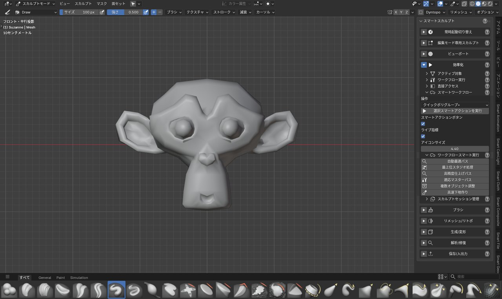
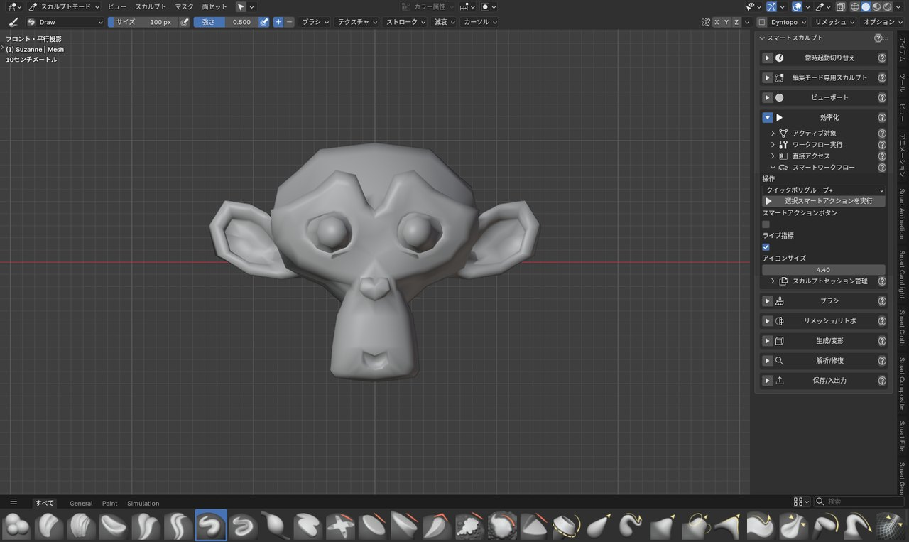
見どころ：チェックを外すと、「ワークフロースマート実行」の枠とボタンが消えます。ほかの見出しの「…スマート実行」も同じです。
スカルプトのブラシを選ぶ、保存する、呼び出す見出しです。広い範囲にまとめて効くフィルターもここにあります。
場所「スマートスカルプト」パネル →「ブラシ」
| 表示 | 働き |
|---|---|
| クイックツール／ツールを有効化 | 「ブラシ操作」の中にあります。ブラシを選び、「ツールを有効化」を押すと、スカルプトモードに入ってそのブラシに切り替えます。一部は Blender 標準の近いブラシになります（「スクレイプ」は Scrape/Fill、「クロス」は Drag Cloth、「クリーズ」は Crease Sharp）。 |
| ワークフロープロファイル／プロファイル適用 | 作業に合わせた設定の組み合わせを選び、まとめて当てます。 |
| お気に入りスロット | 1〜3 のスロットを選びます。「保存ブラシ」に、そのスロットに入っているブラシが出ます。「保存」で今のスカルプトブラシを入れ、「呼び出し」で戻し、「スロット消去」で空にします。 |
| クイックブラシ | 「描画」「クレイ」「クレイストリップ」「つかみ」「スムーズ」「スクレイプ」「ポーズ」「クロス」「シャープ描画」「クリーズ」を、ボタン 1 つで切り替えます。半径と強さも、そのブラシに合う値にします。 |
| ブラシ系フィルター | 「強度」を決めて、広い範囲をまとめて変形します。先頭の「フィルター対象」で「メッシュ」か「クロス」を選ぶと、選んだ方の項目と適用ボタンだけがパネルに出ます。「メッシュ」の時の「メッシュフィルター適用」は、「メッシュフィルター」で選んだ処理で表面を整えます。「クロス」の時の「クロスフィルター適用」は、「クロスフィルター」で選んだ動き（重力など）で、辺が伸びないように保ちながら布のように変形します。クロスフィルターは、マスクと非表示の頂点を動かしません。マスクが無い時の重力は、上端を固定します。別の所を固定する時は、そこをマスクします。 |
| IMM / VDM / レイヤー | 「インサートマルチメッシュ生成」は、作業中のメッシュの近くに差し込み用の部品を作ります（「IMMパーツ」「IMM個数」「IMM間隔」で種類と並びを決めます）。「VDMスタンプ作成」は、しわや溝などの細部の型になるメッシュを作ります。「3Dレイヤー操作を実行」「モーフターゲット操作を実行」は、シェイプキー（形の差分を保存する仕組み）を使って、形の層や修正用の形を扱います。 |
| ブラシスマート実行／統合ブラシツール | 「ブラシスマート実行」は、その見出しに関係するまとめ処理（スマートアクション）のボタンが並ぶ枠です。押すと、その処理をまとめて行います。最初は閉じています。「統合ブラシツール」は、「マスク/フェイスセットのパイ」（丸いメニュー）を開くボタンの枠です。パイには「マスクツール」「フェイスセットとトリム」「フィルターと抽出」「変形と表示」の 4 つのボタンがあり、押すとその道具を集めた小さな窓が開きます。スカルプトモード以外で開くと、「スカルプトモードでこのメニューを開いてください。」とだけ出ます。 |
実例球の下半分を、布のように重力で垂らす（クロスフィルター）（球で試した様子）
「クロスフィルター適用」は、辺が伸びないように保ちながら、メッシュ全体を布のように一度に変形します。マスクした所は動きません。
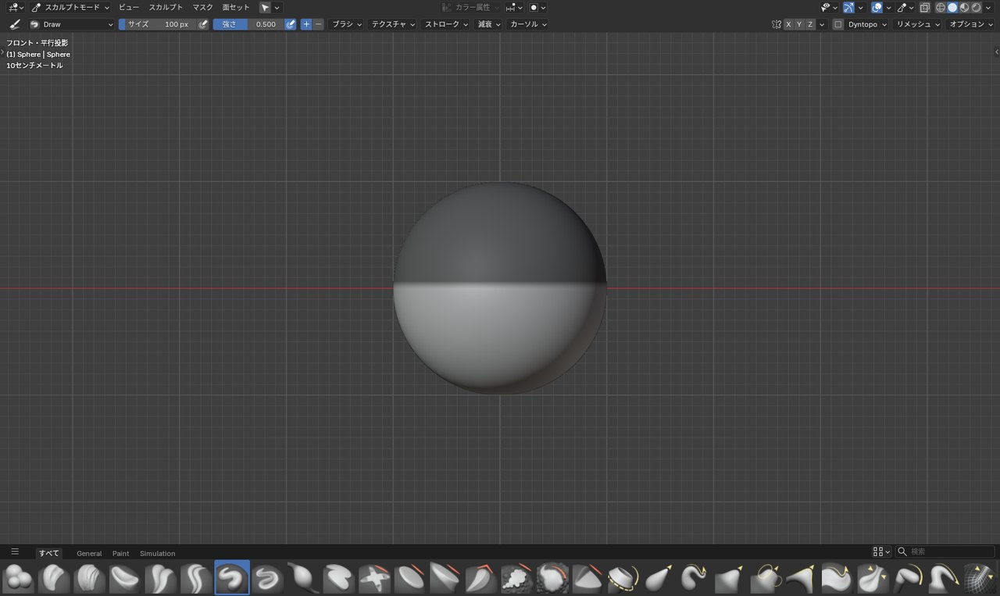
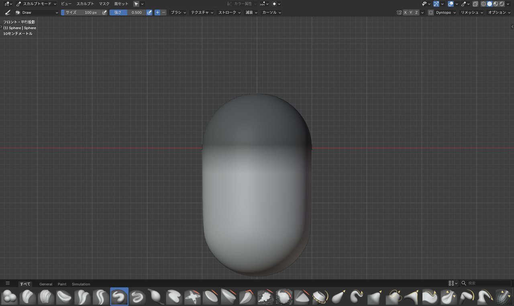
見どころ：マスクした上半分（暗い所）はそのままで、マスクの無い下半分だけが布のように下へ伸びます。
実例「フィルター対象」でメッシュとクロスを切り替える（球で試した様子）
「フィルター対象」で選んだ方のフィルターの項目と適用ボタンだけが、パネルに出ます。
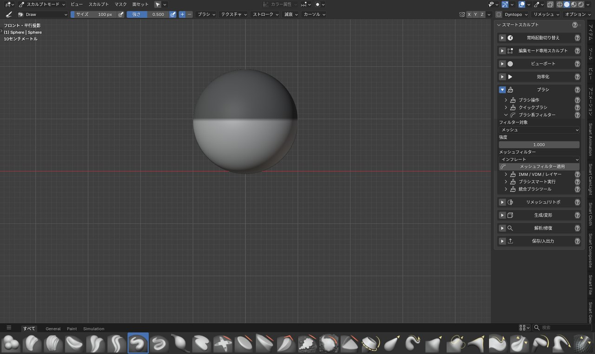
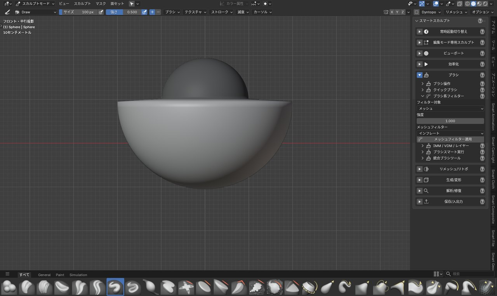
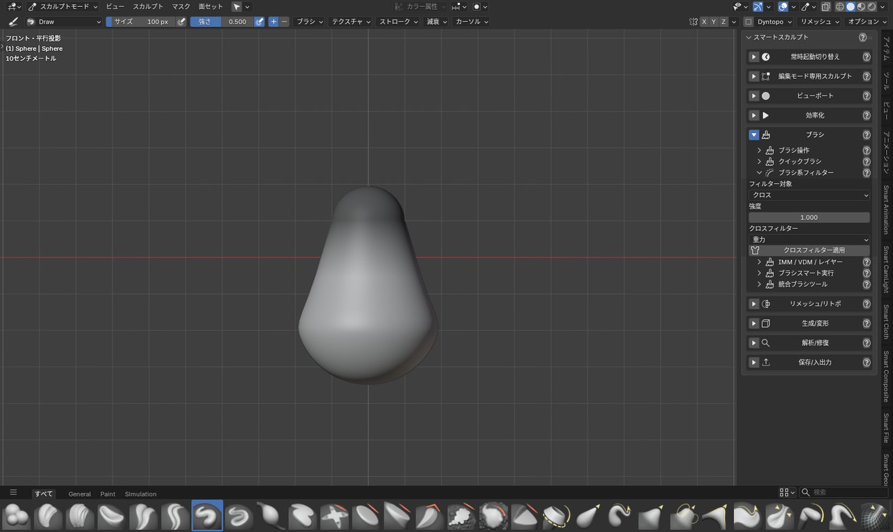
見どころ：パネルの項目とボタンが、対象に合わせて入れ替わります。球は、どちらの対象でもマスクの無い下半分だけが動きます。メッシュでは膨らみ、クロスでは布のように垂れます。
メッシュの面を作り直したり、細かさを変えたりします。マスクやフェイスセットで、一部を切り出すこともできます。
場所「スマートスカルプト」パネル →「リメッシュ/リトポ」
| 表示 | 働き |
|---|---|
| リメッシュ/リトポ実行 | 「操作」で選んだ処理を、「選択トポロジー操作を実行」で実行します。下の枠のボタンと同じ処理を、ここから選んで呼べます。 |
| ダイナミックトポロジー | ダイナミックトポロジー（ブラシでなぞった所だけ自動で面を細かくする仕組み）の「モード」と「細かさ」を決め、「ダイナミックトポロジーを設定」で使えるようにします。「ディテール均一化」は、メッシュ全体の面の細かさをそろえます。オブジェクトモードから押すと、ダイナミックトポロジーを入れて実行します。スカルプトモードから押した時にダイナミックトポロジーがオフだと、「先にダイナミックトポロジーを有効化してください」と出て止まります。UV の付いたメッシュは、スカルプトモードを出るとダイナミックトポロジーが切れます。 |
| リメッシュ | 「リメッシュ方式」で「ボクセル」か「クアッドリメッシュ」を選びます（最初は「ボクセル」）。「ボクセルサイズ」を決めて「ボクセルリメッシュ」を押すと、面をほぼ同じ大きさに作り直します。「適応度」を上げると、平らな所の面を減らして軽くします（最初は 0）。「クアッドリメッシュ実行」は、「クアッド目標面数」に近い数の四角い面で作り直します。 |
| マルチレゾ | 細かさの段階（レベル）を持つ仕組みです。「操作」と「レベル」を決め、「マルチレゾ実行」を押します。 |
| マスク | 「操作」で選ぶと、下のボタンが替わります。「抽出」の時の「マスク抽出」は、マスクした所を厚みのある別のオブジェクトにします（厚さは「抽出厚み」、形のならし方は「抽出スムーズ」「境界ループ」「シュリンクラップ」）。「スライス」の時の「マスクスライス」は、マスクした所を切り分けて別のオブジェクトにします（切り口をふさぐのは「スライス穴埋め」）。ほかの操作は「マスク操作を実行」で行います。 |
| フェイスセット | 「操作」で選ぶと、下のボタンが替わります。「抽出」の時の「フェイスセット抽出」は、表示中でいちばん大きい（面の数が多い）フェイスセットを新しいオブジェクトにします（厚さは「抽出厚み」）。別のフェイスセットを抽出する時は、ほかを隠してから押します。ほかの操作は「フェイスセット操作を実行」で、部品や素材などをもとに面をグループ分けします。 |
| リトポ / UV | 「クアッドリメッシュ」で、「目標面数」に近い数の四角い面で作り直します。「リトポ補助を作成」で、面を作り直すための補助のオブジェクトを作ります（「オフセット」「ミラー」）。「自動UV展開」で UV（テクスチャを貼るための展開図）を自動で作ります（「UVマージン」は島の間の余白）。 |
| ポリグループ / フロー | 「深層ポリグループ作成」で、素材や継ぎ目などをもとに面を「ポリグループ数」のグループに分けます。「フローリメッシュガイド作成」で、面の流れの目安になるカーブを「フローガイド数」の本数だけ作ります。 |
| リトポのスマート実行／統合サーフェイスツール | 「リトポのスマート実行」は、その見出しに関係するまとめ処理（スマートアクション）のボタンが並ぶ枠です。押すと、その処理をまとめて行います。最初は閉じています。「統合サーフェイスツール」は、「マスク/フェイスセットのパイ」を開くボタンと、「選択をスカルプトマスクへ」のボタンの枠です。パイには「マスクツール」「フェイスセットとトリム」「フィルターと抽出」「変形と表示」の 4 つのボタンがあり、押すとその道具を集めた小さな窓が開きます。スカルプトモード以外で開くと、「スカルプトモードでこのメニューを開いてください。」とだけ出ます。 |
実例面の大きさをそろえて作り直す（ボクセルリメッシュ）（スザンヌで試した様子）
「ボクセルリメッシュ」で、メッシュの面をほぼ同じ大きさの細かい面に作り直します。スカルプトの前の下ごしらえに使います。
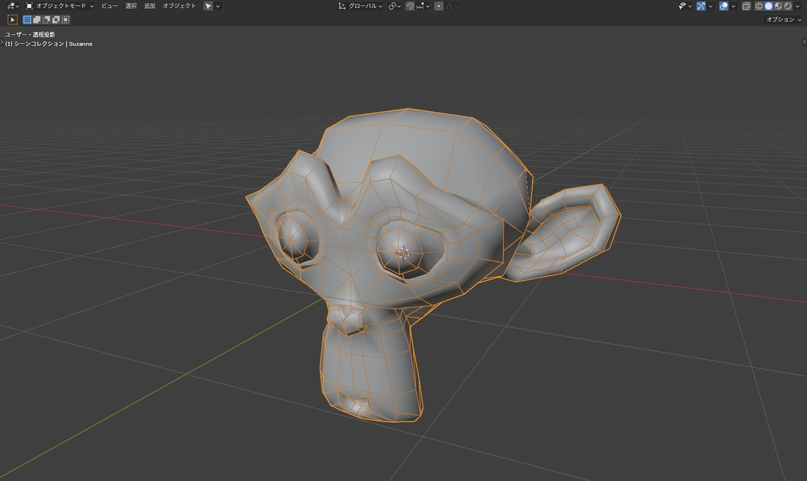
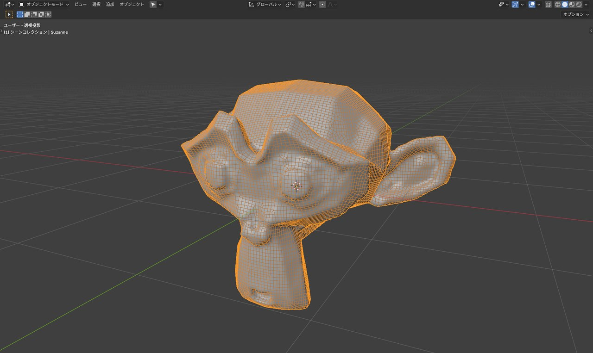
見どころ：大きさがばらばらだった面が、細かく均一な網目に変わります。別々の部品だった目の玉も、頭とつながった 1 つの形になります（目のまわりの細かい形は少しなまります）。
実例フェイスセットを別のオブジェクトに切り出す（3 つのフェイスセットに分けた球で試した様子）
「フェイスセット抽出」は、表示中でいちばん面の数が多いフェイスセットを、厚みのある新しいオブジェクトにします。別のフェイスセットを切り出す時は、ほかを隠してから押します。
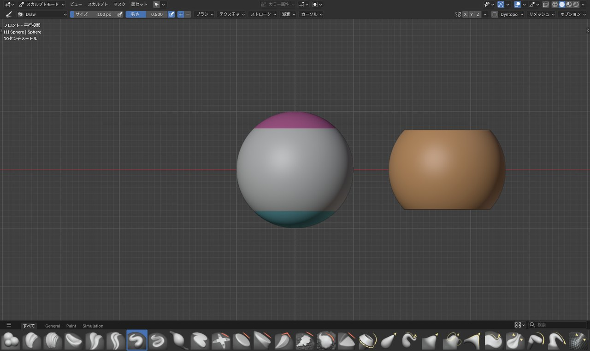
見どころ：切り出した物は元の球の横へ動かして見せています（押した時は元の場所にできます）。何も隠さないと胴の帯、ほかを隠すと上のかぶせが切り出されます。元の球は残ります。
形の土台や部品を新しく作る見出しです。
場所「スマートスカルプト」パネル →「生成/変形」
| 表示 | 働き |
|---|---|
| 造形実行 | 「操作」で作る物を選び、「選択造形操作を実行」で作ります。 |
| プリミティブ | 「プリミティブ」で球などの基本形を選び（最初は「球状」）、「サイズ」と「ブーリアン」（最初は「なし」）を決めて「プリミティブ作成」を押します。 |
| ブーリアン / カッター | 「選択ブーリアン実行」は、アクティブなメッシュを、ほかに選んだメッシュで削る・足すをします（「方式」で選びます。「ボクセル整理」は結果の面を整えます）。「レールカッター作成」は、溝を彫るための細長いカッターを 3D カーソルの位置に作ります（「軸」「レール長さ」「レール幅」「レール深さ」）。「ターゲットへブーリアン」がオンなら、アクティブなメッシュをカッターで削ります。「適用」がオンならその場で確定し、「カッター削除」がオンなら確定の後にカッターを消します。「カッターにベベル」はカッターの角を落とします。 |
| ブロックアウト形状 | 「スフィアチェーン作成」で球を連ねた土台の形、「カーブチューブ作成」で管の形、「アンカーベンド作成」で形を曲げるための補助を作ります。 |
| 散布 / プロシージャル | 「ディテール散布」は、選んだ補助のメッシュを、アクティブなメッシュの表面にばらまきます。「プロシージャル追加」は、モディファイア（あとから外せる変形の仕組み）で細かい凹凸を足します。 |
| Zモデラー / 挿入ツール | 「Zモデラー操作」で選び、「Zモデラー補助を実行」で、縁の面取りなど硬い物の形作りを手伝います。「インサートマルチメッシュ生成」「VDMスタンプ作成」もここにあります。 |
| 生成/変形スマート実行 | その見出しに関係するまとめ処理（スマートアクション）のボタンが並ぶ枠です。押すと、その処理をまとめて行います。最初は閉じています。 |
実例頭に溝を彫る（レールカッター作成）（スザンヌで試した様子）
「レールカッター作成」は、細長いカッターを作って、アクティブなメッシュに溝を彫ります。
見どころ：頭の上に、左右へまっすぐ通る溝が彫られます。「適用」をオフにすると、カッターを残して、溝の位置をあとから変えられます。
メッシュに問題がないかを調べ、よくある問題をまとめて直します。
場所「スマートスカルプト」パネル →「解析/修復」
| 表示 | 働き |
|---|---|
| メッシュ情報 | 選んでいるメッシュの名前、モード、頂点・辺・面の数を表示します。 |
| 解析 | 「解析/修復」の中にあります。メッシュを調べて、見つかった問題を表示します。 |
| 修正 | 下のチェックで選んだ修正をまとめて行います。 |
| レポート | 調べた結果を、Blender のテキスト（テキストエディターで読める文書）に書き出します。 |
| 修正時にスケール適用／法線再計算／孤立ジオメトリ削除／縮退ジオメトリ溶解／マージ距離 | 「修正」で行う内容を選びます。最初にオンなのは「法線再計算」だけです。法線は面の表の向き、孤立ジオメトリはどこにもつながっていない頂点や辺、縮退ジオメトリは大きさがほぼない面や辺のことです。「縮退ジオメトリ溶解」をオンにすると「縮退閾値」が出ます。 |
| ライブメッシュ準備度 | 選んでいるメッシュの点数と面の数などを表示する枠です。「解析」の前は「スコア」が「未計測」です。詳しくは次の節の図で説明します。 |
| 選択スマートアクション | いま選ばれているまとめ処理（スマートアクション）の内容を表示する枠です。「選択スマートアクションを実行」で実行します。 |
| スマート安全 / 品質 | まとめ処理の「品質」と、「事前検査」「適応スケール」「スナップショット」「非破壊優先」「レポート」などの安全の設定です。 |
| アクションの数値 | まとめ処理で使う「強度」「密度」「個数」「分割数」「軸」「ボクセル」「マルチレゾ」「目標面数」を決めます。 |
| ZBrush差分カバレッジ | 「HDレベル」「ディテール強度」「ポリグループ数」を決め、「HDマイクロタイルスタック作成」「深層ポリグループ作成」「ZBrush級パイプライン実行」「カバレッジレポート作成」を使う枠です。 |
| 解析/修復スマート実行 | その見出しに関係するまとめ処理（スマートアクション）のボタンが並ぶ枠です。押すと、その処理をまとめて行います。最初は閉じています。 |
実例裏返った面をまとめて直す（解析/修復の「修正」）（スザンヌで試した様子）
「修正」で、チェックで選んだ修正（最初は「法線再計算」）をまとめて行い、裏返った面の向きをそろえます。
見どころ：面の向きの表示（裏返った面が赤）で、右半分に出ていた赤い面が消え、向きがそろったことが分かります。
重い処理の前に、メッシュの状態を点数で確かめる枠です。「解析」を押すと、下の図のように点数が出ます。
場所「スマートスカルプト」パネル →「解析/修復」→「ライブメッシュ準備度」
| 表示 | 働き |
|---|---|
| スコア | 100 点満点の目安です。「解析」かスマートアクションを実行するまでは「未計測」です。 |
| 面／四角面／リスク辺 | 「面」は面の数、「四角面」は四角い面の割合（1.00 で全部が四角）、「リスク辺」は問題になりそうな辺の数です。「四角面」と「リスク辺」は、点数が出てから表示されます。 |
| UV／形状レイヤー | 「UV」は UV の数、「形状レイヤー」はシェイプキー（形の差分を保存する仕組み）の数です。 |
| 最上位推奨 | そのメッシュに勧める処理の名前が出ます。 |
| 自動最適パス | メッシュの状態を調べて、合うスマートアクションを実行します。 |
途中の形を残す、戻す、外部とやり取りする、いらないデータを片付ける見出しです。設定（プリファレンス）もこの中にあります。
場所「スマートスカルプト」パネル →「保存/入出力」
| 表示 | 働き |
|---|---|
| スナップショット | 「操作」で選ぶと、下のボタンが替わります。「スナップショット保存」で今の形を残します。一覧で選んだ物を「スナップショット復元」で戻し、「スナップショット比較表示」で見比べ（「比較表示を解除」で終わります）、「スナップショット削除」で消します。 |
| 回復 | 「回復バックアップ」は最初からオンです。オンの間は、リメッシュ、ブーリアン、修正、UV の上書き、スライスなどの前に、オブジェクトごとに控えを 1 つ自動で作ります。「操作」が「復元」（最初は「復元」）の時に「回復バックアップ復元」を押すと戻せます。「削除」の時は「回復バックアップ削除」で控えを消します。 |
| シェイプレイヤー | シェイプキーをスカルプトの層として使います。「操作」で「作成」「複製」「削除」「駆動」を選び、下のボタンで実行します。「駆動」はボーンの動きで形の強さを動かす設定で、「駆動ボーン」「チャンネル」「最小」「最大」を決めます。 |
| 入出力 / 整理 | 「操作」で「エクスポート」「最新を読み込み」「整理」を選ぶと、下のボタンが替わります。「形式」「対象」「フォルダー」を決めて「受け渡し書き出し」「最新受け渡しを読み込み」を使います。「タイムスタンプ名」がオンなら、ファイル名に日時が付きます。「生成データ整理」で、このアドオンが作った補助のデータを片付けます（「スナップショットも整理」でスナップショットも対象にします）。 |
| 3Dレイヤー / モーフターゲット / レポート | 「3Dレイヤー操作を実行」「モーフターゲット操作を実行」で、シェイプキーを使った形の層を扱います。「ZBrush差分レポート作成」で、調べた結果を書き出します。 |
| プリファレンス | このアドオンの設定です。読み込みの状態を見る「ランタイム状態」と、道具ごとの設定の「ツール別設定」が、続けて並びます。 |
| 保存/入出力スマート実行 | その見出しに関係するまとめ処理（スマートアクション）のボタンが並ぶ枠です。押すと、その処理をまとめて行います。最初は閉じています。 |
| シーン設定 | このシーンに保存される設定を、分野ごとにまとめて表示する枠です。最初は閉じています。 |
実例リメッシュの前に形を残して、あとで戻す（スナップショット）（スザンヌで試した様子）
「スナップショット保存」で今の形を残すと、大きな変更のあとでも「スナップショット復元」で戻せます。
見どころ：網目を見てください。リメッシュで細かく変わった網目が、復元で元の網目に戻ります。
リメッシュなど、元に戻しにくい操作の前に控えを作ります。
結果：保存した時点の形に戻せます。
伸びたり詰まったりした面を、同じくらいの大きさに作り直します。
結果：メッシュ全体が、ほぼ同じ大きさの面で作り直されます。
お気に入りのブラシを、すぐに呼び出せるようにします。
結果：選んだスロットのブラシに、ボタン 1 つで戻れます。
書き出しや次の作業の前に、メッシュの問題を片付けます。
結果：選んだ項目の問題が直ります。
モードを切り替えずに、なぞった所を盛ったりならしたりします。
結果：編集モードのまま、なぞった所の形が変わります。
アドオンが出ない・日本語にならない、など全部のアドオンに共通のことは、全体仕様書の「困った時」を見てください。
| アドオン | SmartSculpt Suite（smart_sculpt_suite） |
|---|---|
| 版 | 1.0.0 |
| ZIP | SmartSculptSuite_1.0.0.zip |
| 大きさ | 11,029,927 バイト |
| SHA256 | 55c29a894ef7c89c5f7c5c2d7ddd8bcf5c937aa1e16cd90309e29260ca2cb42c |
SmartSculpt Suite 解説書 v1.0.0 ／ 2026-11-18 作成